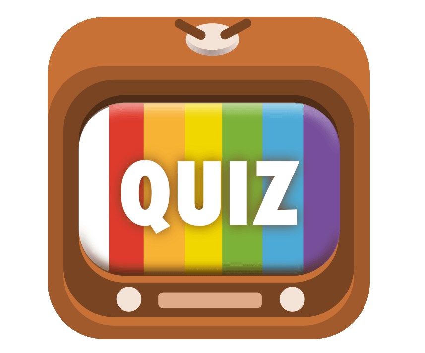

<nav class="row navbar bg-dark">
  <div class="container-fluid">
    <span class="navbar-brand mx-auto"> <b>T</b>rivi<b>A</b>pp by <a href="https://github.com/federicocapucci/QuizApp" target="_blank"> <b>FC</b></a>
      
    </span>
    
  </div>
</nav>

